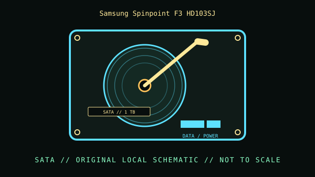

[ INDIVIDUAL COMPONENT // HARD DISK DRIVES ]
Samsung Spinpoint F3 HD103SJ
Spinpoint F3, 1 TB SATA model. This record describes this exact catalog identity; related capacities, interface variants, suffixes, and revisions may have different properties.

IDENTIFICATION: Compare the complete model and suffix on the label with the manufacturer document and actual drive inquiry. Family-level values do not describe every revision or the condition of a particular unit.
Part specifications
| Catalog subcategory | SATA desktop drives |
|---|---|
| Catalog identity | Samsung Spinpoint F3 HD103SJ |
| Product family | Spinpoint F3, 1 TB SATA model |
| Form factor | 3.5-inch desktop; exact external dimensions are not inferred from this class. |
| Interface | SATA 3 Gb/s. |
| Capacity / performance / sectors | 1 TB; 7200 RPM; 32 MB buffer per HD103SJ model data sheet. Sector reporting may vary by firmware/drive presentation; confirm actual unit. |
| Compatibility | SATA host; confirm BIOS capacity support, firmware, and logical-sector presentation before installing in legacy systems. |
Handling, service & preservation
- Label and retain the original Samsung model and firmware data. Minimize unnecessary power-on cycles for unknown vintage media and verify all copied data by checksum.
- Before service, photograph the label, connectors, board markings, firmware/model identity, and installed carrier; note condition and any prior repair.
- Never open a hard disk outside a qualified clean environment. Mechanical shocks, contamination, and uncontrolled power cycling can worsen failure.
- For preservation, make independent verified copies and record checksums and read errors; SMART or self-test results are useful evidence but do not guarantee future reliability.
Model-specific source
- Samsung SpinPoint F3 HD103SJ user manual / specification scanModel-specific Samsung datasheet scan for HD103SJ; do not substitute HD103SI or another F3 suffix.
Values above are limited to the cited exact-model or clearly identified model-family document. Record the document revision with any collection measurements.